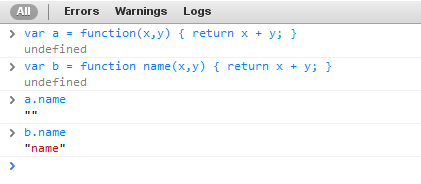
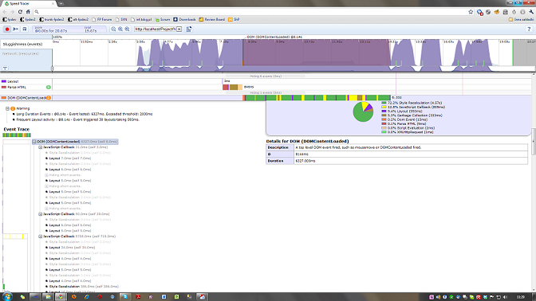
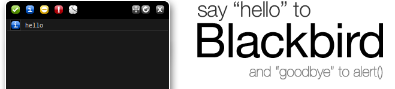

js@FP
Szkolenie z JavaScript'u zorganizowane w ramach grupy eksperckiej RIA (14.06.2011)
wgawronski@future-processing.com
( fpdev2 team )
Future-Processing © Wojciech Gawroński - 2011 (version: 0.9a)
js@FP
Szkolenie z JavaScript'u zorganizowane w ramach grupy eksperckiej RIA (14.06.2011)
wgawronski@future-processing.com
( fpdev2 team )
...
...
Obiekty tych typów można utworzyć dwojako:
Wykorzystując konstruktor
Poprzez literał specyficzny dla obiektu
(new Object(false)).constructor === Boolean; // true (new Object(3.14)).constructor === Number; // true
Powyższy konstruktor jest najprostszą i wbudowaną w język 'fabryką'
Wzorzec Factory ;)
Falsy values to zbiór wartości dających fałsz
"0" == 0 // true - następuje rzutowanie ze stringa do int.
NaN == 0 // false - NaN nie jest równe niczemu
NaN == NaN // false - ... nawet samemu sobie.
"\t\r\n " == 0 // true - string złożony ze znaków białych
// jest uznawany za pusty
0 == {} // false - konwersja object do number zwraca NaN
[] == 0 // true - falsy values
undefined == null // true - falsy values
null == 0 // false - nic nie może być równe null poza undefined
false == new String("") // true - ponieważ po prawej stronie mamy obiekt
// to rzutujemy jego wartość do boolean
undefined == "" // false - nic nie może być równe undefined poza null
[] == ![] // true - ciekawy przypadek ;)
// po prawej mamy tablica rzutowaną z negacją
// po lewej falsy value
// wyniki to true dlatego, że istniejący
// obiekt zanegowany zwróci false
Poprzedni slajd pokazał dobitnie zawiłości korzystania z operatorów ==/!=
Zalecane jest używanie operatorów potrójnych (ang. strict operators),
które najpierw sprawdzają typ a dopiero potem wartość.
null == undefined // Jedyny sensowny sposób użycia operatorów podwójnych.
Jednak i to może być niebezpieczne w przypadku
gdy zamiast wspominanych wartości pojawi się tam falsy value.

a.toString(); // Rzutowanie każdego obiektu do stringa.
// Uwaga: można nadpisać tą metodę.
2.toString(); // SYNTAX ERROR :(
2..toString(); // Poprawna forma powyższego.
a + ""; // Również rzutowanie dowolnego obiektu
// do łańcucha znaków.
+"10" === parseInt("10", 10); // Dwa sposoby na rzutowanie
// do wartości numerycznej.
~~"3.14" === Math.floor(+"3.14"); // Rzutowanie na int, wraz z obcinaniem.
(new Date).getTime() == +new Date; // Rzutowanie Date na Number
!!{}; // Konwersja na wartość Boolean.
~(-1) === 0; // true - dla typu Number: -(n+1) typeof function() {} // 'function'
typeof {} // 'object'
typeof 1 // 'number'
typeof "" // 'string'
typeof true // 'boolean'
typeof null // 'object' - WTF?!
typeof new String("") // 'object' - WTF?!
typeof [] // 'object' - WTF?!
typeof /a/gi // 'function' - WTF?!
typeof UndefinedVar // 'undefined'
// A teraz bonus specjalnie od IE ;)
typeof new ActiveXObject // 'unknown'
Operator służacy do określenia przynależności obiektu
Odbywa się to poprzez sprawdzenie własności constructor w obiekcie
var a = new Object(1);
a instanceof Number; // true
a instanceof Object; // true
var b = "trolololo";
b instanceof String; // false
b instanceof Object; // false
var c = new Boolean(false);
c instanceof Boolean; // true
c instanceof Object; // true
Operator służący do usuwania zmiennych, metod i pól
Usunięty element ma wartość 'undefined'
var x = 0;
typeof x; // number
delete x;
typeof x; // undefined
Nietypowe wykorzystanie operatora alternatywy logicznej:
var x = parameter || 1024;
Równie nietypowe wykorzystanie operatora koniunkcji logicznej:
!!parent && parent.importantMethod();
Jest to łata na braki w specyfikacji ES3
__proto__ (IE) zwraca prototyp danego obiektu
Odpowiednikiem tego pola w ECMAScript 5 jest
metoda Object.getPrototypeOf
W JavaScripcie mamy do dyspozycji standardowe pętle
Są one składniowo identyczne np. z językiem C
Istnieje jednak kilka różnic o których warto wiedzieć:
for(var i = 0, l = array.length; i < l; i += 1) {
// Warto zapamiętywać długość tablic
// przy iteracji w zmiennej
for(var i in myObject) {
if (myObject.hasOwnProperty(i)) {
// Dopiero wtedy iterujemy
// po rzeczywistych polach obiektu
}
}
Jest to kolejny uzasadniony przypadek użycia 'wrappera'.
W przypadku obiektu można podać wyrażenie regularne
w postaci łańcucha znakowego:
var regex = new RegExp("[abc]", "gi"); // Należy uważać na cudzysłowy.
var literalRegex = /[abc]/gi
W jednym i drugim przypadku można łatwo podać flagi dopasowań ( gmi )
Same tablice też mają kilka ciekawych nieścisłości:
new Array(3.14); // RangeError
// Jak wykryć tablicę w ES3?
Object.prototype
.toString.call([]) === "[object Array]"
// W języku występuje jeden obiekt
// pseudotablicowy - arguments.
// Jest to tablica argumentów funkcji.
// Posiada length ale nie jest tablicą.
var args = Array.prototype.slice.call(arguments);
args = [].slice.call(arguments);
Jest to kompletny podzbiór języka służący do opisu danych
(ang. JavaScript Object Notation)
Zawiera on tylko elementy służące do opisu danych - tablice, obiekty, liczby,
wartości boolowskie oraz literały znakowe (tylko podwójne cudzysłowy)
{ "a" : 1, "b" : true, "c" : [true, null, false] }
W specyfikacji ES5 mamy do dyspozycji moduł JSON
Jeśli musimy zapewnić support dla starszych przeglądarek
korzystajmy z bibliotek: MS AJAX, json2.js, YUI, jQuery
Nigdy nie korzystajmy z funkcji eval.
(new Error()).name
(new Error()).message
try {
dangerousOperation();
} catch(e) {
if (e.name === "TypeError") // ...
}
throw { /* ... */ };
throw Error();
throw new Error();
...
'only sky is a limit'
Funkcje w JavaScripcie to obiekty - mogą mieć pola, metody.
Sztandardowym przykładem są pola istniejące w każdej funkcji:
name, length, arguments
Kolejna zaskakująca rzecz to zasięg:
JavaScript nie posiada zasięgu blokowego.
Obowiązuje zasięg całej funkcji.
var i = 100;
// ...
for(var i = 0; i < 10; i += 1) { /* ... */ }
var foo = function foo() { /* ... */ };
var foo = function() { /* ... */ };
function foo() { /* ... */ } // Brak średnika!

Domknięciem (ang. closure) nazywamy kontekst wywołania funkcji,
jest on przechwytywany przy wykonaniu funkcji.
Dzięki temu tworzy się łańcuch odwołań (ang. lookup)
przez co funkcja ma dostęp do wszystkich wyższych kontekstów.
(function() {
var a = 1, b = "trolololo";
(function() {
console.log(a);
console.log(b);
}());
}());
Wydajność: Lookup cost
Wraz z kontekstem wywołania zmienia się obiekt this
na powiązany z aktywną funkcją.
Jeśli nasza funkcja potrzebuje dostęp do obiektu this z wyższego kontekstu,
musimy jej dostarczyć ten obiekt w postaci zmiennej dostępnej poprzez domknięcie:
(function() {
var self = this;
this.name = "Ha!";
(function() {
console.log(self.name);
}());
}());
(function(a, b) { /* Treść funkcji */}(1,2))
(function(a, b) { /* Treść funkcji */})(1,2)
Zastosowanie: stworzenie nowego lokalnego zasięgu, niedostępnego znikąd,
module pattern, zadania jednorazowe, leniwa inicjalizacja.
Jest to rodzaj wzorca optymalizującego.
Metody i ścieżki w kodzie są wybierane w trakcie inicjalizacji
co przyśpiesza ich wykonanie usuwając zbędne rozgałęzienia
if (window.addEventListener) {
var myEvent = function (el, type, fn) {
el.addEventListener(type, fn, false);
};
} else if (window.attachEvent) {
var myEvent = function (el, type, fn) {
el.attachEvent("on" + type, fn);
};
}
Możliwe do zrealizowania gdy znamy strategię już w czasie inicjalizacji.
Sposób przekazywania parametrów do funkcji.
myDomElement.setStyle({ "color": "red", "border-size": 0 });
Zamiast przekazywania kilkunastu parametrów do funkcji
w odpowiedniej kolejności, może warto stworzyć obiekt JSON
i przypisać mu tylko niezbędne właściwości
a następnie przesłać go do funkcji.
...curry to nie przyprawa (Haskell Curry)
method.apply(this, argumentsArray);
method.call(this, argumentsArray[0], argumentsArray[1]);
Metoda dostępna w ES5 (jest w Function.prototype).
W ES3 implementacja wygląda tak:
Function.prototype.bind = function( obj ) {
if (typeof this !== 'function') {
throw new TypeError('"This" is not callable.');
}
var slice = [].slice,
args = slice.call(arguments, 1),
self = this,
nop = function () {},
bound = function () {
return self.apply( this instanceof nop ?
this :
(obj || {}),
args.concat(slice.call(arguments)));
};
bound.prototype = this.prototype;
return bound;
};
Metoda przygotowująca częściowo funkcję - podajemy do niej część
parametrów, a przy wywołaniu uzupełniamy tylko brakujace argumenty:
Function.prototype.curry = function (fn) {
var slice = Array.prototype.slice,
args = slice.apply(arguments, [1]);
return function () {
return fn.apply(null, args.concat(slice.apply(arguments)));
};
};
Wzorzec umożliwiający spamiętywanie wyników tymczasowych w domknięciu.
W przypadku funkcji rekurencyjnych może znacznie
przyspieszyć wykonywanie funkcji.
var memoizer = function(memo, fundamental) {
var shell = function(n) {
var result = memo[n];
if (typeof(result) !== 'number') {
result = fundamental(shell, n);
memo[n] = result
}
return result;
};
};
W JavaScripcie jest (i będzie nadal możliwe)
pisanie w paradygmacie funkcyjnym:
...
...
Pustość obiektów w kontekście prototypów.
Należy zawsze pamiętać o prototypach przy przeglądaniu obiektów.
Dlaczego rozszerzanie prototypów obiektów podstawowych jest niebezpieczne?
Ponieważ niesie ze sobą ryzyko zaśmiecenia obiektu lub nadpisania
metody standardowej bądź napisanej przez kogoś innego.
Dodatkowo to podejście utrudnia przeglądanie obiektów.
Konstruktory to funkcje tworzące obiekty, oznaczamy je wielką literą
(nie ma rozróżnienia syntaktycznego między konstruktorem a funkcją,
stąd potrzeba umownego zapisu).
function Child() {
var that = {};
that.name = "Omen";
return that;
}
function Child() {
if (!(this instanceof Child)) {
return new Child();
}
}
var namespace = function(obj) {
var args = Array.prototype.slice.call(arguments, 1),
parts = [], original = obj,
a, i;
for(a in args) {
if (args.hasOwnProperty(a)) {
parts = args[a].split('.');
obj = original;
for(i in parts) {
if (parts.hasOwnProperty(i)) {
if (!obj[parts[i]]) {
obj[parts[i]] = {};
}
obj = obj[parts[i]];
}
}
}
}
};
Jak uzyskać metody i pola prywatne?
var privateMembersInside = (function() {
var alias1 = MYAPP.dom.events,
alias2 = MYAPP.dom,
privField = 1;
function privMethod() {}
return {
publicMethod : function() { return privField; }, // Priviledged Method
publicField : 12
};
}());
var privateMembersInside = (function(global) {
var alias1 = MYAPP.dom.events,
alias2 = MYAPP.dom,
privField = 1;
function privMethod() {}
return {
publicMethod : function() { return privField; },
publicField : 12
};
}(this));
Implementacja konstruktora globalnego (z zapewnieniem new),
który wywołuje callback dostarczony w argumencie
(jest to przestrzeń do której będzie mógł się dodać).
Sam Sandobox trzyma wszystkie moduły i odniesienia do nich,
i na podstawie wybranego po nazwie modułu będzie mogł go dostarczyć
do naszej implementacji - pattern służy zmniejszeniu kolizji nazw
i zwiększeniu enkapsulacji modułów.
Statyczne metody publiczne definiujemy bez prototypu.
Są dostępne zawsze po kropce z nazwą modułu.
W przypadku prywatnych - musimy znów odgrodzić się nową funkcją,
lokalnym zasięgiem i tam zadeklarować zmienną
a następnie dodać do prototypu (lub nie) wszystkie inne elementy.
Słowo kluczowe const istnieje ale nie jest wspierane przez IE i Operę.
Aby zasymulować stałe dla obiektów, najlepiej:
albo przyjąć odpowiednią konwencję nazewniczą (np. ALLCAPS)
albo symulować dostęp przez proste gettery i settery
(w ES5 jest słówko const, są też gettery i settery wbudowane w język).
$("p.neat").find("div#ohmy").children(".om-nom-nom").fadeOut();
Chyba każdy kto korzystał z jQuery jest zaznajomiony z tym patternem.
Jego implementacja jest bardzo prosta - z każdej funkcji zwracany jest główny
(ale zmodyfikowany) obiekt
Tradycyjne podejście do hierarchii klas zawodzi w tym przypadku.
Wynika to ze specyfiki języka - w JavaScripcie
implementacja modelu dziedziczenia jest oparta na łańuchach prototypów.
function inherit(C, P) { C.prototype = new P() };
Uwaga: prototype musi byś zawsze konkretnym obiektem, więc new jest tu niezbędne.
function Child(name) { Parent.apply(this, arguments); }
Poprawia błąd poprzedniego wzorca i aplikuje parametry
wybrane z konstruktora bazowego dziedziczenia
do konstruktora pochodnego.
function Child(name) { Parent.apply(this, arguments); }
Child.prototype = new Parent();
Kombinacja dwóch poprzednich sposobów dziedziczenia - pożyczamy konstruktor oraz przypisujemy prototyp.
function inherit(C, P) { C.prototype = P.prototype; }
Współdzielimy prototyp między poszczególnymi funkcjami konstruktora.
function inherit(C, P) {
var F = function() {}; // To można stworzyć raz - optymalizacja.
F.prototype = P.prototype;
C.prototype = new F();
C.uber = P.prototype; // Nadklasa - sztuczna
// ciągłość w łańcuchu prototypów.
C.prototype.constructor = C; // Resetowanie konstruktora
// aby określić właściwie pochodzenie.
}
Przerywa połączenia obiektów bazowych z pochodnymi za pomocą tymczasowego konstruktora - "proxy".
Jest to syntax sugar dla emulacji klas - wykorzystuje pattern proxy constructor oraz kilka umownych nazw (__construct). Buduje właściwą klasę pochodną zwracając rozszerzony obiekt po zaaplikowaniu zmian związanych z wzorcem konstrukcyjnym.
Generalnie rozwiązanie niepolecane ze względu na sztuczność w tym języku,
potencjalne błędy wynikające własnej implementacji.
Jedyną zaletą jest naturalność dla innych programistów
zaznajomionych z ideą OOP.
function object(parent) {
function F() {}
F.prototype = parent;
return new F();
}
Naturalne, w pełni korzystające z prototypów wyjście
do tego szybkie, korzystające tylko z elementów języka.
function extend(parent, child) { ... }
Kopiowanie właściwości do dziecka - płytka kopia,
referencje są przepisywane do obiektu dziecka.
function mix() { /* Scalamy obiekty przesłane w argumentach do funkcji */ }
Idea zaczerpnięta z języka Ruby, korzystamy z wielu obiektów
dostarczonych jako parametry i składamy z nich jeden obiekt.
Pożyczanie metod z jednego obiektu do drugiego - wykorzystanie w tym celu metod apply, call, bind, curry.
...
...czyli pola minowe


...czyli mocne strony JavaScriptu
...
DOM oraz JIT
Globalna funkcja obsługi błędów:
window.addEventListener("error", function() { /* Error handler */ }, false);
IE 6/7/8 ma bardzo nieleganckie zachowanie
polegające na wyciszaniu błędów
Błędy pokazują się tylko przy aktywnej konsolce,
a na dodatek przy ukrytej konsolce wspomniany handler się nie wywołuje.
Reflow - przeliczenie fizycznych właściwości i ponowne ułożenie elementów.
Następuje po zmianach layoutu, geometrii tj. dodawanie/usuwanie elementów,
zmiana rozmiaru, resize, zmiana zawartości.
Repaint - odmalowanie fragmentu drzewa po zmianie stylu lub
po zdarzeniu reflow.

Podstawową techniką wykrywania powinno być
wykrywanie funkcjonalności.
Wykrywanie oparte na User Agent ma sens
tylko jako technika wspomagająca.
Dlaczego? Główny powód to łatwość podmiany
takiego stringa. Kolejny, to oszustwa samych przeglądarek.
V8, Carakan, Chakra, JaegerMonkey, JavaScriptCore
V8, SpiderMonkey, Dromaeo, Kraken
Testy z IE10 Platform Preview to nie są benchmarki ;]
...
Singleton, Factory, Observer, Strategy, Module pattern, Coding patterns
function Universe() {
var instance;
Universe = function Universe() {
return instance;
};
Universe.prototype = this;
instance = new Universe();
instance.constructor = Universe;
this.start_time = 0;
this.message = "Big bang!";
return instance;
}
CarMaker.factory = function(type) {
var constr = type, newcar;
// Sprawdzenie czy "constr" znajduje się naszym obiekcie.
// Inicjalizacja dziedziczenia i prototypów.
// Tworzymy obiekt.
newcar = new CarMaker[constr];
return newcar;
};
// Metody fabrykujące obiekty - wyszukiwane po nazwie.
CarMaker.Compact = function() {};
CarMaker.SUV = function() {};
CarMaker.Convertible = function() {};
function Observer() {
this.fns = [];
}
Observer.prototype = {
subscribe : function(fn) {
this.fns.push(fn);
},
unsubscribe : function(fn) {
this.fns = this.fns.filter(function(el) {
if ( el !== fn ) {
return el;
}
});
},
fire : function(o, thisObj) {
var scope = thisObj || window;
this.fns.forEach(function(el) { el.call(scope, o); });
}
};
// Główna funkcja walidacji.
var type = el.getAttribute('validationtype');
var isValid = Validator[type];
if ( cic.visible(el) ) {
if ( !isValid(el) ) {
element.style.border = "1px solid #B23232";
errors.push(element.getAttribute('validationmsg'));
} else {
element.style.border = "1px solid #CAD5DE";
}
}
// Walidacja zależna od typu.
var Validator = {
"text": function (data) {},
"email": function (data) {},
// ...
}
var MODULE = (function (global) {
var my = {},
privateVariable = 1;
function privateMethod() {
// ...
}
my.moduleProperty = 1;
my.moduleMethod = function () {
// ...
};
return my;
}(this));
Dosłowne tłumaczenie to dyskretny JavaScript
Sama koncepcja jest prosta - chodzi o rozdzielenie
warstwy zachowania od warstwy semantycznej
Ma to na celu udostępnienie informacji jak największej ilości osób,
także tym którzy z JavaScriptu nie korzystają.
Również zapobiega to sytuacji
gdy błędy mogą zablokować dostęp do zawartości strony.
To koncepcja rozszerzania funkcjonalości strony
wtedy gdy naprawdę jest dostępna.
Poprzez feature detection i inne techniki wykrywania
programista może odpowiednio obsłużyć sytuacje wyjątkowe
i dostępne elementy,
które są zależne od środowiska.
Don't assume anything
To pewien sposób myślenia.
Nie posiadamy w ogóle założeń (lub posiadamy ich minimalną ilość).
Od tego momentu w sposób maksymalnie defensywny (bezpieczny)
korzystamy z kolejnych elementów, metod i funkcji.
[-1, -2, -3].forEach(function (negativeIndex) {
Object.defineProperty(Array.prototype, negativeIndex, {
get: function () {
return this[this.length + negativeIndex];
},
set: function (value) {
this[this.length + negativeIndex] = value;
}
});
});
...
...czyli coś co ułatwia życie
console.log("A", "B", "C"); // A B C
console.warn("A");
console.debug("A");
console.error("A");
console.info("A"); $("id") // getElementbyId
$$("css") // Dowolny selektor Css
$x("xpath") // Zwraca elementy pasujące
// do selektora XPath.
$0 // Ostatnio sprawdzany obiekt.
$n // Obiekt sprawdzany jako n-ty
// od końca licząc od ostatniego.
inspect(el) // Pokazuje element
// w inspektorze obiektów.
dir(el) // Zwraca tablice nazw
// właściwości obiektu.
clear() // Czyści konsolę.
Framework (strona internetowa) do zabaw z wydajnością
Umożliwia wysyłanie testów do wielu użytkowników
Strona internetowa, która umożliwia budowanie szybkich prototypów
w technologiach HTML5, CSS3 i JavaScript
Profiler rodem z GWT - podpinany jako wtyczka do Chrome
Potężny kombajn do testowania prawie wszystkich elementów stron internetowych.
Wersja premium jest płatna.
Wtyczka do Firebuga wprost od Yahoo.
Pozwala przetestować aplikację webową od strony najczęstszych problemów.
Proxy przechwytujące cały ruch HTTP

Uniwersalna konfigurowalna konsola - projekt OpenSource
Strona internetowa do wyszukiwania micro-framework'ów
Programy sprawdzające składnię według prekonfigurowanych reguł.
Biblioteka zapewniająca fallback i detekcję
dla nowych własności z HTML5 oraz CSS3.

Szwajcarski scyzoryk jeśli chodzi o oczyszczanie i kompresję skryptów.
(ang. minification and compression)
Podsumowanie
...